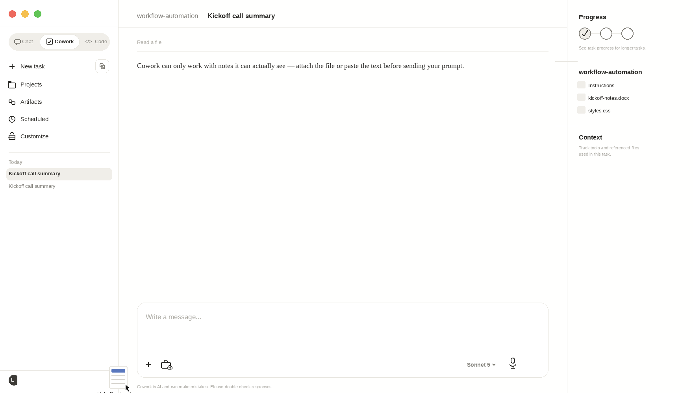
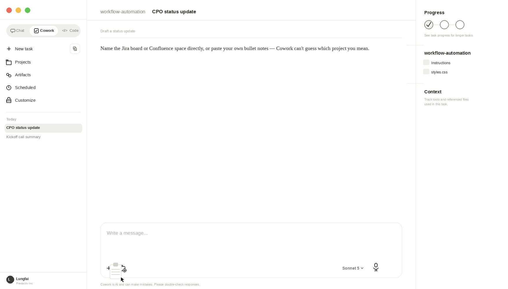
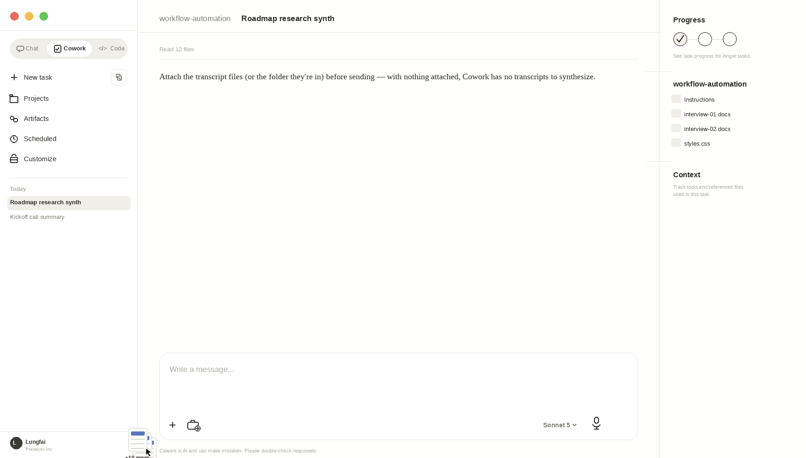

Workflow Automation
Workflow AutomationFive Cowork Workflows for Data & Product Teams at Predactiv
These are five workflows worth trying this month, chosen because they map to work our Product, Data Science, ML Engineering, and Frontend teams already do — not generic "AI use cases." The first three work with a stock Cowork setup today — paste the prompt and go. The last two need specific access, noted inline below; if you don't have it yet, ask the Product team rather than assuming the prompt just doesn't work.
1. First-draft write-ups for partner POCs
High-stakes POCs generate a lot of documentation, and most of it starts the same way: scattered meeting notes and Slack threads that someone has to turn into something a partner can actually read. Cowork can take that raw material and produce a structured first draft — what we agreed on, open questions, next steps — that you then tighten rather than write from a blank page. This is where the time savings are largest, because the structure and polish (not the judgment calls) is the expensive part.
Cowork can't see your notes unless you give it something to read. Either attach the notes doc/file directly to the chat, paste the raw notes below the prompt, or point Cowork at a folder you've connected (e.g. "read the notes in [filename] in my POC folder"). A bare prompt with no notes attached or pasted will just get you a request for the notes.
Try it — attach or paste your notes, then send this
Using the attached notes from our kickoff call with [partner], write a one-page summary: what we agreed on, open questions, and next steps.

2. Stakeholder and status updates
Weekly updates to our CPO or cross-functional stakeholders eat real time when done well. Cowork can draft a status update pulling from Jira/Confluence activity, Slack threads, or your own bullet notes, tailored to the audience — exec brief vs. engineering detail vs. partner-facing.
The Jira/Confluence pull only works if the Atlassian connector is authorized in your Cowork settings — otherwise name the specific project or page ("pull activity from the [project key] Jira board") so Cowork knows where to look, or just paste your own bullet notes into the chat instead.
Try it — copy into Cowork
Pull this week's activity from the [Jira project/board name] and [Confluence space], plus these bullet notes I'm pasting below, and draft this week's product status update for our CPO: what shipped, what's blocked, one decision I need from them.

3. Research synthesis for roadmap decisions
When our PM's research or support ticket themes need to feed into prioritization, Cowork can synthesize interview notes, survey responses, or ticket dumps into ranked themes with supporting quotes — a defensible input for a roadmap conversation rather than a gut call.
Attach the transcript files (or the folder they're in) to the chat before sending this, or point Cowork at the connected folder that holds them. If nothing's attached, Cowork has no transcripts to synthesize and will just ask you for them.
Try it — attach the transcripts, then send this
Using the attached interview transcripts, synthesize them into themes ranked by frequency and impact, with a recommendation for what to prioritize next sprint.

4. Audience segment QA before delivery
Before a syndicated audience ships to a partner, someone manually eyeballs composition, size estimate, and filter logic. Cowork can connect to our audience platform and pull an audience's definition, insights, and preview numbers, then flag anything that looks off — a filter that silently zeroes out a segment, a size estimate that's implausible relative to the seed, or a keyword set that drifted from the original brief.
Requires the Predactiv audience platform connector. If you don't see audience data come back, check with the Product team before assuming the prompt is wrong.
Try it — copy into Cowork
Pull the definition and size estimate for [audience], and flag anything inconsistent with a US, 25-44, in-market description.
5. Bulk audience/segment creation and refresh
When our lead analyst or the analytics team has a list of new syndicated segments to create in DataSphere, doing it one-by-one in the UI doesn't scale. Two purpose-built skills cover this: agent-new-syndicated-segments creates audiences in bulk from a Google Sheet, and agent-update-syndicated-segments re-autoscales keywords on existing audiences. Both turn an afternoon of clicking into a five-minute review-and-approve. See the full write-up for how each one works and the guardrails built in.
Requires both DataSphere skills installed and the Claude in Chrome extension active — these drive the live DataSphere web app, so neither works without it. Install the skills and extension first, or read the full write-up before trying this one.
Try it — copy into Cowork
Create syndicated segments in DataSphere from this sheet of names and keywords.
A note on judgment
Every one of these produces a draft, not a final answer — treat Cowork's output as a strong first pass that still needs a domain expert's review, especially anything going to a partner or leadership. The value is compressing the blank-page problem, not removing the review step.
Further reading: the theory behind these workflows — Building Effective Agents and A Practical Guide to Building Agents on the Predactiv AI Reading List.